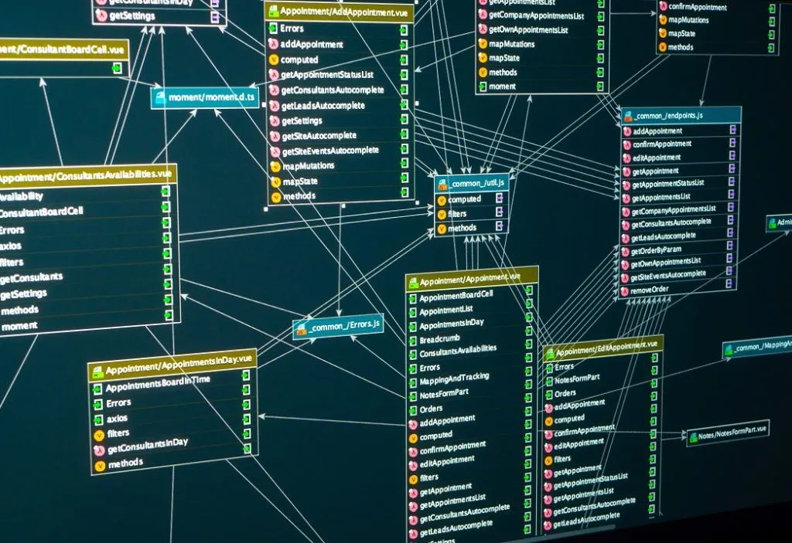

| Name | Datenbank, multiversale Datenbank |
| Formaler Name | DTB |
| Anzahl der Bewohner | 0 |
| Alter | ca. 30 Milliarden Jahre |
| Existenzstatus | Existierend |

Keine Inspiration, flog mir einfach so durch den Kopf als ich andere Artikel geschrieben hab mit dem Ziel, alles irgendwie Sinn machen zu lassen
Die multiversale Datenbank dient als eine Art Zwischenspeicher für die DNA, Gedanken, Gefühle, usw. einer bestimmten Person; auch genannt Seele. Wenn jemand stirbt, wird das automatisch von der Datenbank registriert und die Seele wird gespeichert. Ein Algrythmus bestimmt, was als nächstes Geschehen soll und löscht sie entweder für immer und ewig, oder schickt sie weiter nach HLL oder HVN. Dieser Transfer kann jedoch abgefangen werden, wie uns der Bösewicht schon so schön demonstriert hat als er die Erde zerstörte. Schon dort fing er bestimme Seelen ab, um sie als Untertanen wiederzugebären.
Tatsächlich weis keiner so genau, wie genau das funktioniert, warum es da ist und wer es gemacht hat; es wird wohl für immer ein Mysterium bleiben.
Niemand